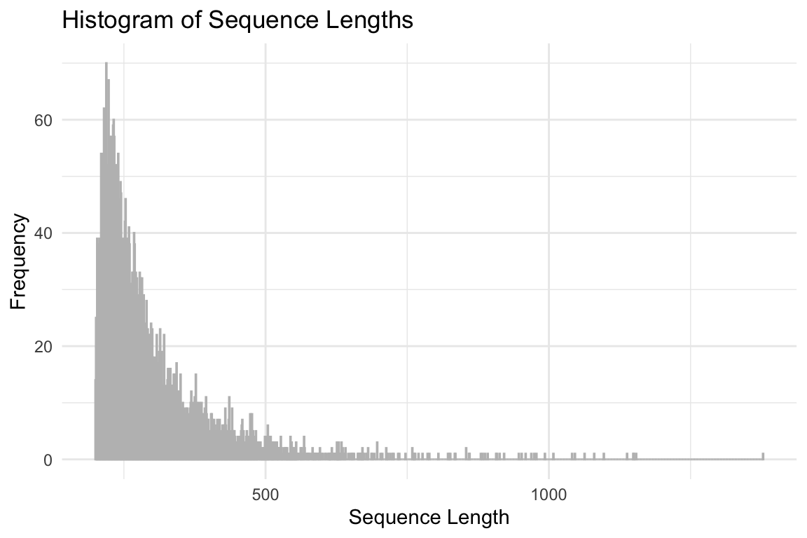
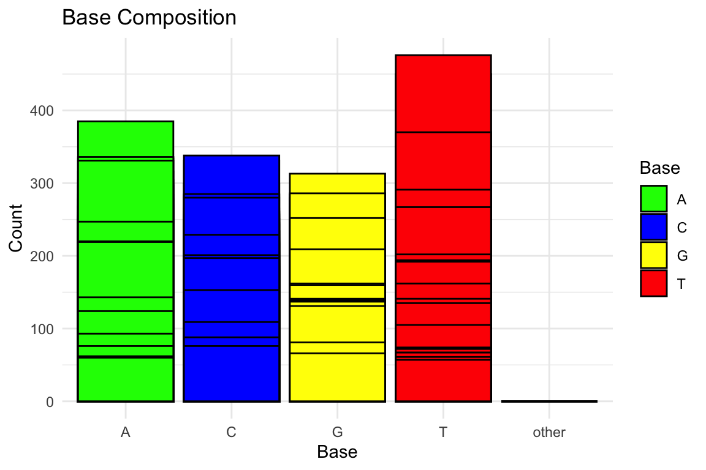
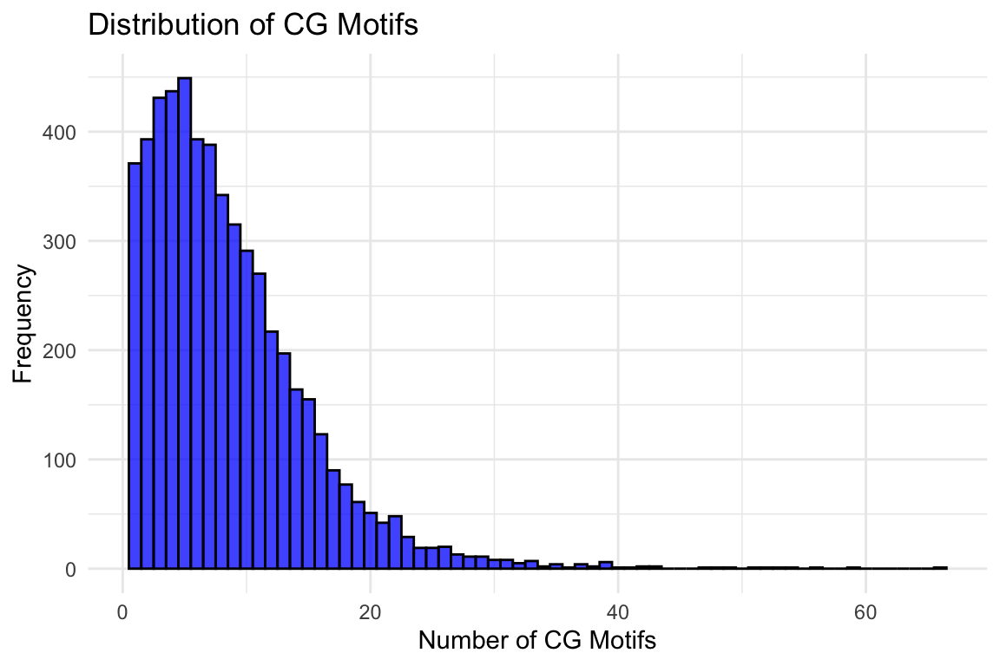

NCBI Blast
Taking a set of unknown sequences and working out what genes they are
This is a walkthrough, not a script. The code is shown so you can read it, understand what each step does, and adapt it — the page itself does not execute anything. Expected outputs are shown as static blocks beneath the commands that produce them.
To actually run it, you need NCBI BLAST+ and a machine with some memory and patience. See Computing Resources.
What you are doing and why
You have a few thousand sequences and no idea what they are. Maybe they came off a de novo assembly of a non-model organism, so there is no annotation to inherit. You want to know which genes are present.
The strategy is comparison. Take each unknown sequence, search it against a database of proteins whose function is known, and transfer the annotation from the best match. That is the whole idea behind BLAST — Basic Local Alignment Search Tool.
The database used here is UniProt/Swiss-Prot: the manually reviewed portion of UniProt. It is much smaller than the full database and much better curated, which is exactly the trade you want for annotation. A confident match to a reviewed protein is worth more than a match to something machine-annotated.
By the end you will have gone from an anonymous FASTA file to a table of gene names, organisms, and Gene Ontology terms.
Which BLAST program to use
This trips people up, so settle it first. The program name tells you what is being compared:
| Program | Query | Database | Use when |
|---|---|---|---|
blastn |
nucleotide | nucleotide | Comparing DNA to DNA |
blastp |
protein | protein | You already have protein sequences |
blastx |
nucleotide, translated | protein | You have transcripts/DNA and want to know what protein they encode |
tblastn |
protein | nucleotide, translated | Looking for a known protein in an unannotated genome |
This module uses blastx for the unknown transcripts (nucleotide query against a protein database) and blastp for the oyster case study (where NCBI already provides translated proteins).
A note on paths
Commands below call blastx, blastp, and makeblastdb directly, assuming BLAST+ is on your PATH.
On lab machines it may be installed somewhere specific instead. Rather than hardcoding a version into every command — which is how a tutorial silently rots — set it once:
# Adjust to wherever BLAST+ lives on your machine, then use $BLAST/ below.
export BLAST=/home/shared/ncbi-blast-2.11.0+/bin
$BLAST/blastx -versionCheck the version you actually have rather than assuming. Paths and version numbers in older lab notebooks are frequently stale.
Part 1 — Build the database
Download Swiss-Prot
UniProt publishes releases, and which release you used is part of your methods. Recording it is not bookkeeping for its own sake — annotation results shift between releases, and a reviewer or a future you will want to know.
Set the release once and let the filenames follow from it:
cd ../data
# Record the release you are actually downloading.
# Check https://www.uniprot.org/help/release-statistics for the current one.
RELEASE=r2025_03
curl -O https://ftp.uniprot.org/pub/databases/uniprot/current_release/knowledgebase/complete/uniprot_sprot.fasta.gz
mv uniprot_sprot.fasta.gz uniprot_sprot_${RELEASE}.fasta.gz
gunzip -k uniprot_sprot_${RELEASE}.fasta.gzUsing a variable here is deliberate. If you type the release by hand in the download step and again in the database step, sooner or later they will disagree — you will build a database from one file while believing you built it from another, and nothing will error. Set it once, reuse it.
Make the BLAST database
A FASTA file is not searchable as-is. makeblastdb builds the index BLAST needs:
mkdir -p ../blastdb
makeblastdb \
-in ../data/uniprot_sprot_${RELEASE}.fasta \
-dbtype prot \
-out ../blastdb/uniprot_sprot_${RELEASE}-dbtype prot says these are protein sequences. -out gives a prefix, not a filename — several index files are written using it, and you pass that same prefix to -db later.
Part 2 — Annotate unknown sequences
Get the query sequences
The example file is a de novo transcriptome assembly:
curl -k https://eagle.fish.washington.edu/cnidarian/Ab_4denovo_CLC6_a.fa \
> ../data/Ab_4denovo_CLC6_a.faLook at your input first
Always. Knowing the size and shape of your input tells you whether the run will take minutes or days, and catches a truncated download before it costs you an afternoon.
head -3 ../data/Ab_4denovo_CLC6_a.fa
echo "How many sequences?"
grep -c ">" ../data/Ab_4denovo_CLC6_a.faBasic properties worth plotting for any new assembly — sequence length distribution, base composition, and CG motif counts:



Those were produced in R with Biostrings and ggplot2:
library(Biostrings)
library(tidyverse)
sequences <- readDNAStringSet("../data/Ab_4denovo_CLC6_a.fa")
# Sequence length distribution
tibble(Length = width(sequences)) |>
ggplot(aes(x = Length)) +
geom_histogram(binwidth = 1, color = "grey", fill = "blue", alpha = 0.75) +
labs(title = "Histogram of Sequence Lengths", x = "Sequence Length", y = "Frequency") +
theme_minimal()
# Base composition
alphabetFrequency(sequences, baseOnly = TRUE) |>
as_tibble() |>
pivot_longer(everything(), names_to = "Base", values_to = "Count") |>
ggplot(aes(x = Base, y = Count, fill = Base)) +
geom_col(color = "black") +
labs(title = "Base Composition", x = "Base", y = "Count") +
theme_minimal()Run blastx
blastx \
-query ../data/Ab_4denovo_CLC6_a.fa \
-db ../blastdb/uniprot_sprot_${RELEASE} \
-out ../output/Ab_4-uniprot_blastx.tab \
-evalue 1E-20 \
-num_threads 20 \
-max_target_seqs 1 \
-outfmt 6The arguments that matter:
-evalue 1E-20— the significance cutoff. E-value is the number of hits this good you would expect by chance in a database this size, so smaller is stricter.1E-20is conservative, appropriate when you would rather miss a real gene than record a wrong one.-num_threads 20— how many CPUs to use. Set this to what your machine actually has; check withnproc.-max_target_seqs 1— keep only the best hit per query. Fine for “what is this gene,” wrong if you want to examine the hit distribution.-outfmt 6— tabular output. This is the format everything downstream expects.
Before committing to a run over thousands of sequences, take the first few and time it:
head -100 ../data/Ab_4denovo_CLC6_a.fa > ../data/test.faRun the pipeline on that. You will find your path typos in 30 seconds rather than 3 hours.
Check the output
head -2 ../output/Ab_4-uniprot_blastx.tab
echo "Number of hits"
wc -l ../output/Ab_4-uniprot_blastx.tabThe 12 columns of -outfmt 6, in order:
| # | Column | Meaning |
|---|---|---|
| 1 | qseqid |
Query sequence ID |
| 2 | sseqid |
Subject (database hit) ID |
| 3 | pident |
Percent identical |
| 4 | length |
Alignment length |
| 5 | mismatch |
Mismatches |
| 6 | gapopen |
Gap openings |
| 7–8 | qstart, qend |
Alignment range on the query |
| 9–10 | sstart, send |
Alignment range on the subject |
| 11 | evalue |
E-value |
| 12 | bitscore |
Bit score |
There is no header row in the file — you have to know this table.
Note that the hit count is normally lower than your sequence count. Sequences with no match above the E-value threshold simply produce no line. That is a result, not a failure: plenty of transcripts in a non-model assembly have no reviewed homolog.
Split the UniProt identifier
Swiss-Prot IDs arrive as sp|P12345|NAME_SPECIES. The middle field is the accession you need for joining:
tr '|' '\t' < ../output/Ab_4-uniprot_blastx.tab \
> ../output/Ab_4-uniprot_blastx_sep.tab
head -1 ../output/Ab_4-uniprot_blastx_sep.tabThis turns column 2 into three columns, so everything after it shifts right by two. The accession lands in column 3, and the E-value that was column 11 is now column 13.
Part 3 — Join annotations in R
BLAST told you which protein each sequence matches. It did not tell you what that protein does. For that, join to a UniProt table carrying protein names, organisms, and GO terms.
library(tidyverse)
library(DT)
bltabl <- read.csv("../output/Ab_4-uniprot_blastx_sep.tab", sep = "\t", header = FALSE)
spgo <- read.csv("https://gannet.fish.washington.edu/seashell/snaps/uniprot_table_r2023_01.tab",
sep = "\t", header = TRUE)annot_tab <- left_join(bltabl, spgo, by = c("V3" = "Entry")) |>
select(V1, V3, V13,
Protein.names, Organism,
Gene.Ontology..biological.process., Gene.Ontology.IDs)
# Write it out — later steps read this file back in.
write.table(annot_tab, "../output/blast_annot_go.tab",
sep = "\t", row.names = FALSE, quote = FALSE)
datatable(head(annot_tab, 100), options = list(scrollX = TRUE))V3 is the UniProt accession you exposed with tr, and V13 is the E-value after the shift. A left_join keeps every BLAST hit even where the UniProt table has no matching row, so unmatched entries appear as NA rather than vanishing — which is what you want, because a silently shrinking table is the easiest way to lose data without noticing.
What did you match?
A quick sanity check — the organisms behind your hits:
annot_tab |>
count(Organism, sort = TRUE) |>
slice_head(n = 10) |>
ggplot(aes(x = reorder(Organism, n), y = n)) +
geom_col(fill = "steelblue", color = "black") +
coord_flip() +
labs(title = "Top 10 species hits", x = "Organism", y = "Count") +
theme_minimal()Expect a lot of human, mouse, and other well-studied models. That is a property of Swiss-Prot, not a discovery about your animal — reviewed proteins skew heavily toward organisms people study intensively. Do not over-read it.
Most common biological processes
annot_tab |>
separate_rows(Gene.Ontology..biological.process., sep = ";") |>
mutate(process = str_trim(Gene.Ontology..biological.process.)) |>
filter(!is.na(process), process != "") |>
count(process, sort = TRUE) |>
slice_head(n = 20) |>
ggplot(aes(x = reorder(process, n), y = n)) +
geom_col(fill = "darkseagreen", color = "black") +
coord_flip() +
labs(title = "20 most common biological processes", x = NULL, y = "Count") +
theme_minimal()Part 4 — Case study: the eastern oyster
The workflow above starts from unknown sequences. More often you are working in a species that already has a reference, and the goal is to attach GO terms to an existing gene set so you can run functional enrichment later.
Choosing which file to annotate
This is the step people get wrong, and it is worth slowing down for.
Work backwards from your identifiers. Your count matrix already names genes in some particular way. Whatever you annotate has to produce identifiers that match, or the join at the end silently fails.
For a Crassostrea virginica count matrix built with HISAT2/StringTie against the RefSeq GFF, genes are named like gene-LOC111099033. The file that lets you recover those IDs is translated_cds.faa — its FASTA headers carry the [gene=...] tag.
Older lab notebooks — and earlier versions of this module — used GCF_002022765.2 (C_virginica-3.0). That assembly is now suppressed in RefSeq.
The current C. virginica reference is GCF_053477285.1 (ASM5347728v1, chromosome-level, ~529 Mb). Use it for new work.
If you are reproducing an older analysis, you may still need the old assembly — but know that you are doing that deliberately, and say so in your methods. See Bivalves for more on this species.
cd ../data
ASM=GCF_053477285.1_ASM5347728v1
curl -O https://ftp.ncbi.nlm.nih.gov/genomes/all/GCF/053/477/285/${ASM}/${ASM}_translated_cds.faa.gz
gunzip -k ${ASM}_translated_cds.faa.gzhead -2 ../data/${ASM}_translated_cds.faa
echo "number of sequences"
grep -c ">" ../data/${ASM}_translated_cds.faaA header looks like this — note the [gene=...] field, which is the part you need:
>lcl|NC_035780.1_prot_XP_022327646.1_1 [gene=LOC111126949] [db_xref=GeneID:111126949] [protein=UNC5C-like protein] [protein_id=XP_022327646.1] [location=join(30535..31557,31736..31887,31977..32565,32959..33204)] [gbkey=CDS]
MTEVCYIWASSSTTVVICGIFFIVWRCFISIKKRASPLHGSSQQVCQTCQIEGHDFGEFQLSCRRQNTNVGYDLQGRRSDRun blastp
These are already proteins, so this is blastp rather than blastx:
blastp \
-query ../data/${ASM}_translated_cds.faa \
-db ../blastdb/uniprot_sprot_${RELEASE} \
-out ../output/Cvir_transcds-uniprot_blastp.tab \
-evalue 1E-20 \
-num_threads 40 \
-max_target_seqs 1 \
-outfmt 6This is a much larger job than Part 2 — tens of thousands of proteins. Run it somewhere it can finish.
Link gene IDs to Swiss-Prot accessions
The BLAST output identifies each query by the full lcl|... header ID, which does not contain the gene name. The gene name lives in the rest of the header. So convert the FASTA to a table and join on that ID:
awk '/^>/ {if (seq) print id "\t" desc "\t" seq; \
split(substr($0,2), a, " "); id = a[1]; \
desc = substr($0, 2 + length(id) + 1); seq = ""; next} \
{gsub(/ /, ""); seq = seq $0} \
END {if (seq) print id "\t" desc "\t" seq}' \
../data/${ASM}_translated_cds.faa \
> ../data/${ASM}_translated_cds.tab
head -1 ../data/${ASM}_translated_cds.tablibrary(tidyverse)
blast <- read.csv("../output/Cvir_transcds-uniprot_blastp.tab",
sep = "\t", header = FALSE)
cdsftab <- read.csv(paste0("../data/", ASM, "_translated_cds.tab"),
sep = "\t", header = FALSE, row.names = NULL)
g.spid <- left_join(blast, cdsftab, by = "V1") |>
mutate(gene = str_extract(V2.y, "(?<=\\[gene=)\\w+")) |>
select(gene, V11, V2.x) |>
mutate(SPID = str_extract(V2.x, "(?<=\\|)[^\\|]*(?=\\|)")) |>
distinct(gene, SPID, .keep_all = TRUE)Step by step:
left_join(blast, cdsftab, by = "V1")— both tables key on the sequence ID, so this attaches each BLAST hit to its original FASTA header. Columns present in both get suffixed:V2.xfromblast(the Swiss-Prot hit),V2.yfromcdsftab(the header description).str_extract(V2.y, "(?<=\\[gene=)\\w+")— pulls the gene name out of the header. The(?<=...)is a lookbehind: match word characters preceded by[gene=, without capturing that text itself.select(gene, V11, V2.x)— keep the gene name, the E-value, and the hit ID.str_extract(V2.x, "(?<=\\|)[^\\|]*(?=\\|)")— pull the accession fromsp|P12345|NAME_SPECIESby matching what sits between two pipes. Same idea as thetrtrick in Part 2, done in R.distinct(gene, SPID, .keep_all = TRUE)— one row per gene–accession pair. A gene with several transcripts would otherwise appear repeatedly.
Get GO terms
Write out the accessions:
g.spid |>
select(SPID) |>
write.table(file = "../output/SPID.txt", sep = "\t",
row.names = FALSE, quote = FALSE)Then map them to GO terms at https://www.uniprot.org using Retrieve/ID mapping. Paste or upload SPID.txt, map from UniProtKB_AC-ID to UniProtKB, then use Customize columns to include Gene Ontology IDs before downloading as TSV.
Finally, join back so your gene IDs carry GO terms:
go <- read.csv("../output/uniprotGO.tab", sep = "\t",
header = TRUE, row.names = NULL)
left_join(g.spid, go, by = c("SPID" = "Entry")) |>
select(gene, Gene.Ontology.IDs) |>
write.table(file = "../output/geneGO.txt", sep = "\t",
row.names = FALSE, quote = FALSE)geneGO.txt maps each LOC gene ID to its GO terms — the input a functional enrichment test expects.
Where things commonly go wrong
Empty output file. Usually the -db prefix does not match what makeblastdb -out wrote, or the path is wrong relative to where you are running. BLAST will not always complain loudly.
Far fewer hits than sequences. Often correct. Sequences with no homolog above threshold produce no line. Loosen -evalue only if you have a reason, and know you are trading precision for recall.
The join produces all NA. The keys do not match. Print head() of both key columns and look at them. Most often the identifier still has decoration — a sp| prefix, a version suffix — that has not been stripped.
Row count grows after a join. A one-to-many match. Check for duplicate keys on the right-hand table before joining.
It has been running for hours. Check the size of the input and the thread count. Then remember the head -100 test from earlier.
Next steps
With geneGO.txt you can run functional enrichment on a gene set — for instance, the differentially expressed genes from an experiment — and ask which biological processes are over-represented.
For background on the animal behind the case study, see Bivalves. For where to run jobs this size, see Computing Resources.